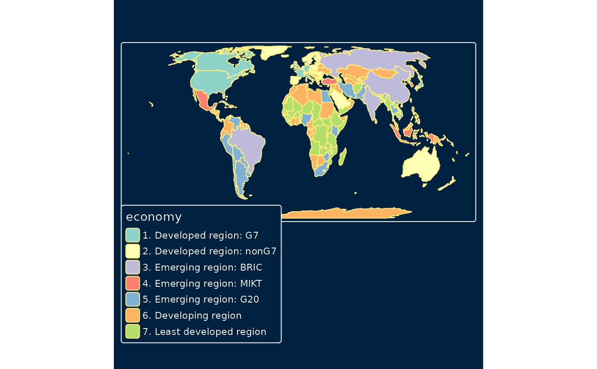
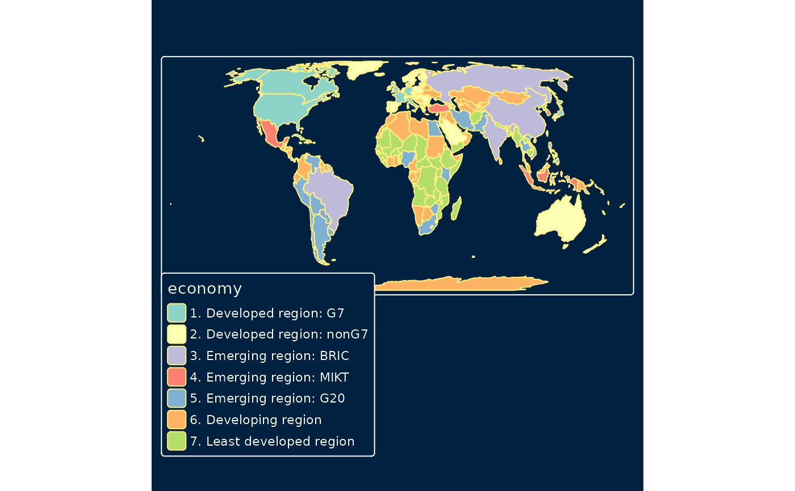

Draw a thematic map quickly. This function is a convenient wrapper of the main plotting method of stacking tmap-elements. Without arguments or with a search term, this functions draws an interactive map.
qtm(
shp,
fill = NA,
symbols.size = NULL,
symbols.col = NULL,
symbols.shape = NULL,
dots.col = NULL,
text = NULL,
text.size = 1,
text.col = NA,
lines.lwd = NULL,
lines.col = NULL,
raster = NA,
borders = NA,
by = NULL,
scale = NA,
title = NA,
projection = NULL,
bbox = NULL,
basemaps = NA,
overlays = NA,
style = NULL,
format = NULL,
...
)Arguments
| shp | One of
|
|---|---|
| fill | either a color to fill the polygons, or name of the data variable in |
| symbols.size | either the size of the symbols or a name of the data variable in |
| symbols.col | either the color of the symbols or a name of the data variable in |
| symbols.shape | either the shape of the symbols or a name of the data variable in |
| dots.col | name of the data variable in |
| text | Name of the data variable that contains the text labels. Only applicable when |
| text.size | Font size of the text labels. Either a constant value, or the name of a numeric data variable. Only applicable when |
| text.col | name of the data variable in |
| lines.lwd | either a line width or a name of the data variable that specifies the line width. Only applicable when |
| lines.col | either a line color or a name of the data variable that specifies the line colors. Only applicable when |
| raster | either a color or a name of the data variable that specifices the raster colors. Only applicable when |
| borders | color of the polygon borders. Use |
| by | data variable name by which the data is split, or a vector of two variable names to split the data by two variables (where the first is used for the rows and the second for the columns). See also |
| scale | numeric value that serves as the global scale parameter. All font sizes, symbol sizes, border widths, and line widths are controlled by this value. The parameters |
| title | main title. For legend titles, use |
| projection | Either a |
| bbox | bounding box. Arugment passed on to |
| basemaps | name(s) of the provider or an URL of a tiled basemap. It is a shortcut to |
| overlays | name(s) of the provider or an URL of a tiled overlay map. It is a shortcut to |
| style | Layout options (see |
| format | Layout options (see |
| ... | arguments passed on to the |
Value
Details
The first argument is a shape object (normally specified by tm_shape). The next arguments, from fill to raster, are the aesthetics from the main layers. The remaining arguments are related to the map layout. Any argument from any main layer function, such as tm_polygons, can be specified (see ...). It is also possible to stack tmap-elements on a qtm plot. See examples.
By default, a scale bar is shown. This option can be set with tmap_options (argument qtm.scalebar). A minimap is shown by default when qtm is called without arguments of with a search term. This option can be set with tmap_options (argument qtm.minimap).
References
Tennekes, M., 2018, tmap: Thematic Maps in R, Journal of Statistical Software, 84(6), 1-39, doi: 10.18637/jss.v084.i06
Examples
data(World, rivers, metro)
# just the map
qtm(World)
 # choropleth
qtm(World, fill = "economy", format = "World", style = "col_blind", projection = "+proj=eck4")

# choropleth with more specifications
qtm(World, fill="HPI", fill.n = 9, fill.palette = "div",
fill.title = "Happy Planet Index", fill.id = "name",
style = "gray", format = "World", projection = "+proj=eck4")
# choropleth
qtm(World, fill = "economy", format = "World", style = "col_blind", projection = "+proj=eck4")

# choropleth with more specifications
qtm(World, fill="HPI", fill.n = 9, fill.palette = "div",
fill.title = "Happy Planet Index", fill.id = "name",
style = "gray", format = "World", projection = "+proj=eck4")
 # this map can also be created with the main plotting method,
# which is recommended in this case.
if (FALSE) {
tm_shape(World, projection = "+proj=eck4") +
tm_polygons("HPI", n = 9, palette = "div",
title = "Happy Planet Index", id = "name") +
tm_style("gray") +
tm_format("World")
}
# bubble map
if (FALSE) {
qtm(World, borders = NULL) +
qtm(metro, symbols.size = "pop2010",
symbols.title.size= "Metropolitan Areas",
symbols.id= "name",
format = "World")
}
# dot map
if (FALSE) {
current.mode <- tmap_mode("view")
qtm(metro, bbox = "China")
tmap_mode(current.mode) # restore mode
}
if (FALSE) {
# without arguments, a plain interactive map is shown (the mode is set to view)
qtm()
# search query for OpenStreetMap nominatim
qtm("Amsterdam")
}
# this map can also be created with the main plotting method,
# which is recommended in this case.
if (FALSE) {
tm_shape(World, projection = "+proj=eck4") +
tm_polygons("HPI", n = 9, palette = "div",
title = "Happy Planet Index", id = "name") +
tm_style("gray") +
tm_format("World")
}
# bubble map
if (FALSE) {
qtm(World, borders = NULL) +
qtm(metro, symbols.size = "pop2010",
symbols.title.size= "Metropolitan Areas",
symbols.id= "name",
format = "World")
}
# dot map
if (FALSE) {
current.mode <- tmap_mode("view")
qtm(metro, bbox = "China")
tmap_mode(current.mode) # restore mode
}
if (FALSE) {
# without arguments, a plain interactive map is shown (the mode is set to view)
qtm()
# search query for OpenStreetMap nominatim
qtm("Amsterdam")
}